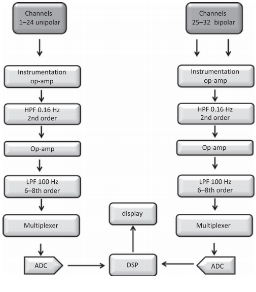
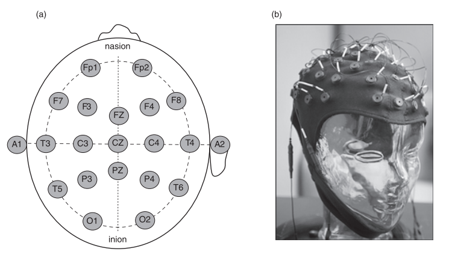
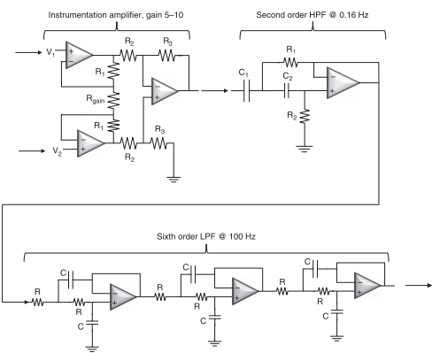

I. Introduction to EEG
This system uses electrodes placed on scalp to measure indirectly electrical activity in brain.
Ionic currents are transduced by electrodes, there are 32 electrodes used for this aim.
We will record a stochastic signal, it looks like random noise.
The usages of EEG relate to epilepsy diagnosis and monitoring, studying brain activity during surgery, monitoring deep anaesthesia... II. EEG signal in brain
The majority electrical signal is generated by cerebral cortex. 10 billion neuron are found with high connectivity. Synapses which transmit signals are seen in cortical neurons. Pyramid cells produce largest component of EEG signal. This type of cell receives synaptic input signal from synapses.
An excitatory postsynaptic potential and inhibitory postsynaptic potential are generated by 2 different synaptic types. The postsynaptic current propogates through CSF and will be detected by both unipolar and biopolar electrodes placed on scalp.
Postsynaptic potential (PSPs) occur and decay so the voltages change from time to time and the signal has no pattern. III. EEG system design

Principle of Biomedical Instrumentation-Andrew G.Webb

Principle of Biomedical Instrumentation-Andrew G.Webb

Principle of Biomedical Instrumentation-Andrew G.Webb
IV. EEG summary
Let see a video on youtube( EEG video)
please view home
please view electrocardiography IV. Reference
[1] "A text book of medical instruments" - S.Ananthi, 2005
[2] Principle of Biomedical Instrumentation-Andrew G.Webb